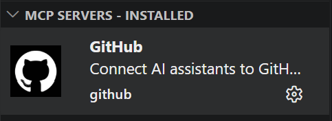

GitHub MCP Server

현재 안쓰임 옵션
References
- Manual: https://docs.github.com/en/copilot/how-tos/provide-context/use-mcp-in-your-ide/use-the-github-mcp-server
- Node.js server: https://github.com/github/github-mcp-server
Overview
GitHub MCP Server는 VS Code 같은 MCP Client에서 GitHub 자원을 읽고 쓰기 위한 MCP Server.
현재 저장소 기준 역할:
- GitHub Repository, Issue, Pull Request, Actions 정보 조회
- GitHub Issue, comment, label, assignee 같은 협업 정보 갱신
- Local MCP Server 기반 TEST 흐름의 GitHub 측 연계
직접 Local test tool을 실행하는 주체는 아님.
Current Position In This Repository
현재 자동 TEST 흐름:
GitHub Issue
-> GitHub Actions
-> Python bridge
-> Local MCP Server
-> results/logs/mcp/server_local + results JSON
-> GitHub Issue comment
의미:
- GitHub MCP Server: GitHub 측 조회 / 갱신 담당
- Local MCP Server: 실제 tool 실행 담당
- GitHub Actions: Issue 기반 자동화 bridge 담당
즉 현재 구조에서 GitHub MCP Server는 Local tool 실행 경로를 직접 host 하거나 trigger 하는 주체가 아니라, GitHub 연계 역할에 집중.
Flow
flowchart LR
A["GitHub Issue"] --> B["GitHub Actions"]
B --> C["Python bridge<br/>mcp.scripts.run_test_request"]
C --> D["Local MCP Server"]
D --> E["results/logs/mcp/server_local<br/>results/*.json"]
B --> F["GitHub Issue comment"]
D --> EVS Code Configuration
VS Code MCP server setup 예시:
{
"servers": {
"io.github.github/github-mcp-server": {
"type": "http",
"url": "https://api.githubcopilot.com/mcp/",
"gallery": "https://api.mcp.github.com",
"version": "0.33.0"
}
},
"inputs": []
}
Example Startup Log
2026-04-17 10:33:22.770 [info] Starting server io.github.github/github-mcp-server
2026-04-17 10:33:22.770 [info] Connection state: Starting
2026-04-17 10:33:22.770 [info] Starting server from LocalProcess extension host
2026-04-17 10:33:22.771 [info] Connection state: Running
2026-04-17 10:33:25.037 [info] Discovered resource metadata at https://api.githubcopilot.com/.well-known/oauth-protected-resource/mcp/
2026-04-17 10:33:25.037 [info] Using auth server metadata url: https://github.com/login/oauth
2026-04-17 10:33:25.440 [info] Discovered authorization server metadata at https://github.com/.well-known/oauth-authorization-server/login/oauth
2026-04-17 10:33:33.737 [info] Discovered 44 tools
Main Capabilities
주요 capability group:
- Repository 조회 / 검색
- branch, commit, file 조회
- Issue 생성 / 수정 / label / assignee / comment 처리
- Pull Request 조회 / diff / review / merge 처리
- GitHub Actions run / job / step / log 조회
실무 관점에서는 GitHub 측 control plane 역할.
Roles
| No. | Role Group | Example Tasks | Verification |
|---|---|---|---|
| 1 | Repository Metadata |
저장소 정보, default branch 조회 | Inferred |
| 2 | Repository Search |
접근 가능한 저장소 검색 | Inferred |
| 3 | Branch Search |
branch 검색, 기준 branch 선택 | Inferred |
| 4 | File Fetch |
특정 ref 파일 조회 | Inferred |
| 5 | Blob Fetch |
blob SHA 기반 조회 | Inferred |
| 6 | Commit Fetch |
단일 commit 메타데이터, 변경 내용 조회 | Inferred |
| 7 | Commit Compare |
두 ref 간 변경 파일, 통계 비교 | Inferred |
| 8 | Commit Search |
commit 검색 | Inferred |
| 9 | Commit Status |
combined status, check 결과 조회 | Inferred |
| 10 | Workflow Run Lookup |
특정 commit의 Actions run 조회 | Inferred |
| 11 | Workflow Jobs |
run 내부 job 목록 조회 | Inferred |
| 12 | Workflow Steps |
job step 상태 조회 | Inferred |
| 13 | Workflow Logs |
실패 job log 조회 | Inferred |
| 14 | PR Metadata |
PR 제목, 상태, base/head branch 조회 | Inferred |
| 15 | PR Diff |
PR diff, patch 조회 | Inferred |
| 16 | PR Patch By File |
파일 단위 PR patch 조회 | Inferred |
| 17 | PR File List |
변경 파일 목록 조회 | Inferred |
| 18 | PR Discussion |
PR comment, review comment, review event 조회 | Inferred |
| 19 | PR Reviews |
review 목록 조회 | Inferred |
| 20 | PR Review Threads |
inline review thread, resolve 상태 조회 | Inferred |
| 21 | PR Reactions |
reaction 조회, 추가 | Inferred |
| 22 | PR Comment Reply |
inline review comment reply 작성 | Inferred |
| 23 | PR Review Submit |
approve, request changes, review 제출 | Inferred |
| 24 | PR Reviewer Request |
reviewer, team reviewer 요청 | Inferred |
| 25 | PR Ready/Draft |
Draft, Ready for Review 전환 | Inferred |
| 26 | PR Update |
제목, 본문, 상태, base branch 수정 | Inferred |
| 27 | PR Merge |
merge, squash, rebase 실행 | Inferred |
| 28 | PR Auto Merge |
auto-merge 설정 | Inferred |
| 29 | Issue Fetch |
Issue 본문, 상태, 메타데이터 조회 | Inferred |
| 30 | Issue Comments |
Issue comment 조회 | Inferred |
| 31 | Issue Create |
Issue 생성 | Inferred |
| 32 | Issue Update |
제목, 본문, 상태, milestone 수정 | Inferred |
| 33 | Issue Labels |
label 추가, 제거 | Inferred |
| 34 | Issue Assignees |
assignee 추가, 제거 | Inferred |
| 35 | Issue Lock |
conversation lock, unlock | Inferred |
| 36 | Issue Comment Update |
top-level comment 수정 | Inferred |
| 37 | Issue Reactions |
Issue comment reaction 처리 | Inferred |
| 38 | File Create |
파일 생성 | Inferred |
| 39 | File Update |
파일 수정 | Inferred |
| 40 | File Delete |
파일 삭제 | Inferred |
| 41 | Blob Create |
blob 생성 | Inferred |
| 42 | Tree Create |
Git tree 생성 | Inferred |
| 43 | Commit Create |
Git commit 생성 | Inferred |
| 44 | Ref Update |
branch ref 이동, branch 생성 | Inferred |
Practical Grouping
| Group | Included Capabilities |
|---|---|
| Read | Repository, File, Commit, PR, Issue 조회 |
| Search | Repository, Branch, code, PR, Issue, Commit 검색 |
| Collaboration | Review, comment, reaction, label, assignee |
| CI / Verification | Actions run, job, step, log |
| Write | 파일 생성 / 수정 / 삭제, branch, commit, merge |
Role Separation
현재 역할 분리:
- GitHub MCP Server
- GitHub 상태 조회
- Issue / comment / review / Actions 결과 조회 및 갱신
- Local MCP Server
build_tool,flash_tool,log_analyzer같은 local tool 실행- log file, result JSON 저장
- GitHub Actions
- Issue event와 Local MCP 실행 경로 연결
이 구분이 중요한 이유는, IDE 안에 GitHub MCP Server가 있어도 Issue 기반 Local TEST는 workflow runner 의존성이 남는다는 점을 설명하기 때문.